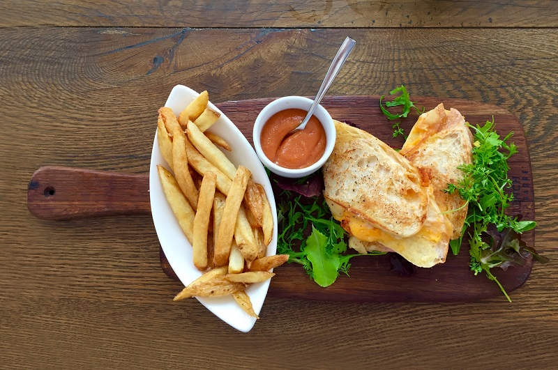
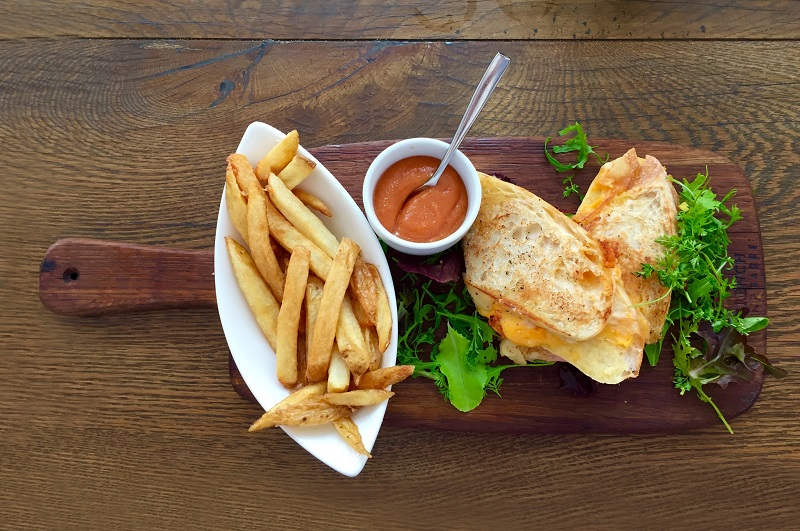
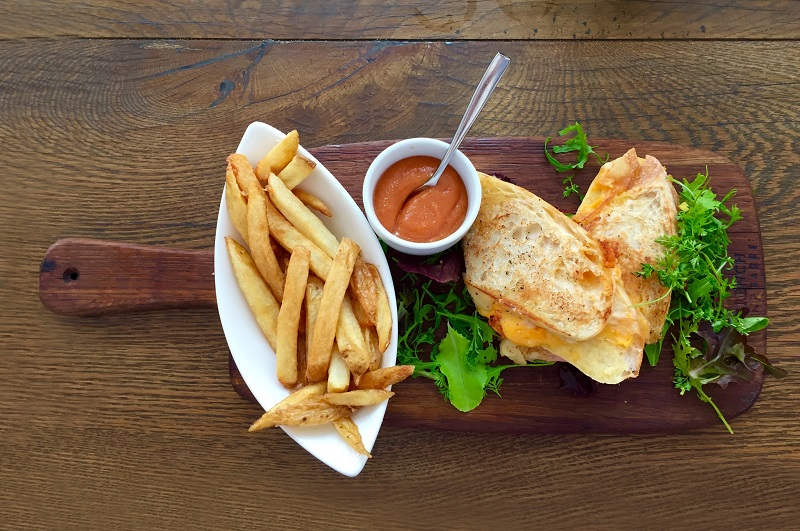

Situată în inima parcului natural apuseni, pensiunea noastră oferă o experiență unică fiecărei persoane care îi trece pragul. Pensiunea are o locație excelentă pentru pasionații de drumeții, cărora le permite să se trezească în mijlocul naturii și să urmărească unul din multele trasee puse la dispoziția lor de către „Adventure Center”. The old woodlands este locul ideal și pentru persoanele care preferă să stea și să admire natura. Pensiunea dispune de o grădina special amenajată, atât pentru copii, cât și pentru adulți. De multe ori, clienții noștri au avut parte de momente inedite în care au putut observa animalele sălbatice din zonă în mediul lor natural. Printre acestea se numără râșii, căprioarele, dihorii și în cazuri speciale chiar lupi.
Camere
Pensiunea noastră se întinde pe 3 etaje. La parter este resaturantul pensiunii, iar la ultimul etaj este centrul nostru de spa. La etajele unu și doi se află camerele care pot găzdui aproximativ 70 de persoane simultan. Avem 30 de camere, fiecare cu baie proprie. Toate acestea dispun de un frigider minibar, halate, șlapi, uscător de păr și produse de igienă. 20 dintre acestea au pat matrimonial, iar celelalte 10 au câte 2 paturi separate. La orice cameră se poate adăuga la cerere unul sau două paturi separate. Camerele sunt spațioase și au un design pitoresc pentru o experiență autentic românească.
Cameră cu pat matrimonial
Dispunem de 20 de astfel de camere. Ele sunt potrivite pentru cupluri. Patul matrimonial este foarte mare, fiind King Size. Toate camerele au un balcon unde sunt amplasate o masă și două scaune. De acolo se vede priveliștea cu lacul și munții din fața cabanei.
Preț:500 lei/noapte
Cameră cu 2 paturi
Dispunem de 10 camere cu 2 paturi, potrivite atât pentru adulți, cât și pentru copii. Niciuna dintre acestea nu are balcon, din motive de siguranță pentru copii. La cerere, se mai pot adăuga contra cost până la 2 paturi. Chiar și așa, camera tot va fi aerisită.
Preț:400 lei/noapte
Cameră VIP
Pe lângă cele 30 de camere ale cabanei, noi dispunem și de un apartament VIP cu piscină. Față de celelalte opțiuni de cazare, această ofertă îți oferă nu doar o cameră, ci un întreg apartament care vine cu o piscină exterioară proprie.
Preț:1000 lei/noapte
Facilități
Grădina
Pensiunea are și o grădină de 10.000 de metri pătrați unde sunt amenajate mese la care se poate mânca, scaune de picnic, hamace și o trambulină mare. Pe lângă acestea, sunt disponibile 3 mese de ping-pong și un spațiu de joacă pentru copii.
Internet
Deși vă putem asigura că nu o să simțiți nevoia de internet pe durata cazării la noi, aveți acces la WiFi oriunde în pensiune și este gratuit.
Parcare
Pensiunea oferă loc de parcare privat tuturor clienților, fără să fie nevoie de rezervare. Aceasta intră în prețul cazării.
Animale de companie
Din păcate, animalele de companie nu sunt acceptate. Dorim să oferim o experiență plăcută și liniștită tuturor celor care aleg pensiunea noastră, motiv pentru care micii patrupezi nu au voie în incintă.
Zona de fumat
În camere nu este permis fumatul, dar avem un loc special amenajat pentru asta, lângă restaurant.
Room service
Pentru cei care nu doresc să coboare la restaurant avem room service. Pentru acest serviciu se percep taxe suplimentare.
Activități
La cererea dumneavoastră se pot organiza drumeții la pas sau cu bicicleta și clase despre cultura locală coordonate de un ghid specialist. Aceste servicii se pot realiza pentru un minim de 20 de persoane și nu sunt incluse în prețul cazării.
Spa
Centrul nostru de spa oferă o gama variată de servicii oferite de cei mai buni specialiști în domeniu. În dorința de a vă pune la dispoziție orice ați putea avea nevoie, am deschis în cadrul pensiunii acest wellness center unde te poți bucura de:
o piscină cu apă sărată
4 saune (saună uscată, saună umedă, saună cu sare și saună cu infraroșu)
2 jacuzzi
tratamente cu masaj (masaj suedez, aromaterapia, masaj cu pietre calde, shiatsu și masaj thailandez)
clase de yoga susținute de un guru
Program și tarife
Centrul de spa este deschis de luni până duminică între orele 10:00 și 23:00. Taxa de intrare pentru adulți este de 50 de lei, iar pentru copiii până în 10 ani de 30 de lei.
Restaurant
Pentru a vă oferi o experiență cât mai plăcută, la parterul pensiunii veți găsi un restaurant spațios unde veți putea lua micul dejun, prânzul și cina. Meniul restaurantului este unul cu specific tradițional românesc. Acesta cuprinde mâncăruri variate pentru toate gusturile. Clienții noștri pot alege din o gamă largă de preparate gătite de bucătarul șef cu ingrediente de cea mai bună calitate.
Meniu
Mic dejun
Omletă cu slănină
Ouă ochiuri cu cârnaț
Ouă fierte cu bulete de cascaval
Pachețele de primăvară
Caș pane cu crenvurști
Sandwich cu cartofi prăjiți
Pâine cu zacuscă
Pâine cu unt și gem de casă
Plăcintă dobrogeană cu caș
Patiserii sărate si dulci
Prânz
Gulaș în pâine
Ciorbă de burtă
Ciorbă de văcuță cu legume
Ciorbă de perișoare
Salată de boeuf
Mămăligă cu brânză și smântână
Tocăniță de miel picantă
Slănină cu jumări
Drob de miel
Salată de vinete
Pilaf de pui
Pește prăjit
Chifteluțe marinate cu piure
Cină
Sarmale
Tochitură de porc
Gulaș de vită cu cartofi
Aripioare de pui
Mici cu cartofi prăjiți
Ghiveci ardelenesc
Piftie cu boia
Musaca de cartofi
Iahnie de fasole cu costiță
Desert
Papanași cu gem de casă
Clătite cu nutella/gem
Gomboți cu prune
Salam de biscuiți
Griș cu lapte si magiun
Băuturi
Limonadă
Ceai
Cafea
Bere
Must
Vișinată
Țuică
Pălincă

Contact
Nu ai înțeles ceva și ai nedumeriri? Nu ezita să ne contactezi. Suntem la dispoziția dumneavoastră. Lasă-ne să te ajutăm să îți rezervi vacanța pe care o meriți. The Old Woodlands este locul ideal de relaxare pentru tine și cei dragi ție. Te invităm să faci și tu parte din clienții noștri mulțumiți de experiență. La noi, tu aduci mood-ul bun și noi ne ocupăm de restul.


 

 Telefon:0751334614
Telefon:0751334614